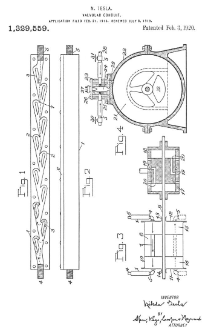

Descarga la patente original en esté enlace


Que se sepa que yo, NIKOLA TESLA , ciudadano de los Estados Unidos, residente en Nueva York, en el condado y en el estado de Nueva York, he inventado ciertas mejoras nuevas y útiles en los conductos valvulares, de las cuales la siguiente es una , descripción clara y exacta.
En la mayor parte de la maquinaria empleada universalmente para el desarrollo, transmisión y transformación de energía mecánica, los impulsos de los fluidos se hacen pasar, más o menos libremente, a través de canales o conductos adecuados en una dirección, mientras que su retorno se controla eficazmente o se evita por completo. Esta función se realiza generalmente mediante dispositivos designados como válvulas, que comprenden miembros cuidadosamente ajustados cuyos movimientos relativos precisos son esenciales para el funcionamiento eficaz y fiable del aparato. La necesidad y la dependencia absoluta de estos limitan la máquina en muchos aspectos, restando valor a su valor práctico y aumentando considerablemente su coste de fabricación y mantenimiento. Por regla general, la válvula es un dispositivo delicado, muy susceptible de desgastarse y averiarse y, por lo tanto, poner en peligro un mecanismo pesado, complejo y costoso y aunque estos y otros hechos correlacionados eran conocidos por los primeros pioneros en la ciencia y el arte de la mecánica, hasta la fecha no se ha encontrado ni propuesto ningún remedio, que yo sepa, y creo que soy el primero en descubrir o inventar. cualquier medio que permita el desempeño de la función anterior sin el uso de partes móviles y que es objeto de esta solicitud describir.
Expresado brevemente, el avance que he logrado consiste en el empleo de un canal o conducto peculiar caracterizado por la acción valvular.
La invención puede materializarse en muchas construcciones muy variadas en detalle, pero para la explicación del principio subyacente se puede afirmar ampliamente que el interior del conducto está provisto de ampliaciones, rebajes, proyecciones, deflectores o cubos que, aunque no ofrecen prácticamente La resistencia al paso del fluido en una dirección, distinta a la fricción superficial, constituye una barrera casi infranqueable a su flujo en sentido contrario debido a las expansiones, contracciones, deflexiones, inversiones de dirección, paradas y arranques más o menos bruscos y concomitantes transformaciones rápidamente sucesivas de las energías de presión y velocidad.
Para la divulgación completa y completa del dispositivo y de su modo de acción, se hace referencia a los dibujos adjuntos en los que:
La figura 1 es una proyección horizontal de dicho conducto valvular con la placa superior retirada.
La figura 2 es una vista lateral del mismo en alzado.
La figura 3 es un diagrama ilustrativo de la aplicación del dispositivo a una máquina propulsora de fluido, como una bomba o compresor alternativo, y
La figura 4 es un plano que muestra la manera en que la invención es, o puede usarse, para operar un motor rotativo o turbina de propulsión fluida.
Con referencia a la figura 1, 1 es una carcasa de metal u otro material adecuado que se puede moldear, moler o prensar a partir de una hoja en la forma deseada. Desde sus paredes laterales se extienden alternativamente salientes que terminan en cubos 2 que, para facilitar la fabricación, son congruentes y están espaciados a distancias iguales, pero no es necesario. Además de estos, hay particiones independientes 3 que se consideran ventajosas y cuyo propósito se aclarará. Se proporcionan boquillas 4 y 5, una en cada extremo, para la conexión de tuberías. El fondo es sólido y el lado superior o abierto está cerrado por una placa de ajuste 6 como se muestra en la Fig. 2. Cuando se desee, cualquier número de tales piezas se pueden unir en serie, formando así un conducto valvular de la longitud que las circunstancias puedan exigir.
Para dilucidar el modo de funcionamiento, supongamos que el medio a presión se admite en 5. Evidentemente, su recorrido aproximado será el indicado por la línea de puntos 7, que es casi recta, es decir, si el canal es Si tiene una sección transversal adecuada, el fluido encontrará una resistencia muy pequeña y pasará libremente y sin perturbaciones, al menos hasta cierto punto. No es así si la entrada está en el extremo opuesto 4. En este caso, el flujo no será suave y continuará, sino intermitente, el fluido se desviará rápidamente y se invertirá en dirección, se pondrá en movimiento giratorio, se detendrá y se acelerará nuevamente, estos procesos que se suceden en rápida sucesión. Los tabiques 3 sirven para dirigir el chorro sobre los cubos y para intensificar las acciones que provocan violentas oleadas y remolinos que interfieren muy materialmente con el flujo a través del conducto. Se observará fácilmente que la resistencia ofrecida al paso del medio será considerable incluso si se encuentra bajo presión constante, pero los impedimentos serán de pleno efecto solo cuando se suministre en pulsos y, más especialmente, cuando los mismos sean extremadamente repentino y de alta frecuencia. Para que las masas de fluidos se detengan y alcancen una alta velocidad en cortos intervalos de tiempo, la energía debe suministrarse a una velocidad inalcanzable, el resultado es que el impulso no puede penetrar mucho antes de disminuir y da lugar a un movimiento en el sentido contrario. dirección. El dispositivo no solo actúa como un impedimento para el retorno corporal de partículas, sino también, en cierta medida, como un freno a la propagación de una perturbación a través del medio. Su eficacia está determinada principalmente; primero, por la magnitud de la relación de las dos resistencias ofrecidas al flujo perturbado y no perturbado, respectivamente, en las direcciones de 4 a 5 y de 5 a 4, en cada elemento individual del conducto; segundo, por el número de ciclos completos de acción que tienen lugar en una determinada longitud del canal valvular y, tercero, por el carácter de los impulsos mismos. Se puede obtener una idea justa a partir de simples consideraciones teóricas. por la magnitud de la relación de las dos resistencias ofrecidas al flujo perturbado y no perturbado, respectivamente, en las direcciones de 4 a 5 y de 5 a 4, en cada elemento individual del conducto; segundo, por el número de ciclos completos de acción que tienen lugar en una determinada longitud del canal valvular y, tercero, por el carácter de los impulsos mismos. Se puede obtener una idea justa a partir de simples consideraciones teóricas. por la magnitud de la relación de las dos resistencias ofrecidas al flujo perturbado y no perturbado, respectivamente, en las direcciones de 4 a 5 y de 5 a 4, en cada elemento individual del conducto; segundo, por el número de ciclos completos de acción que tienen lugar en una determinada longitud del canal valvular y, tercero, por el carácter de los impulsos mismos. Se puede obtener una idea justa a partir de simples consideraciones teóricas.
Examinando más de cerca el modo de operación, se verá que, al pasar de uno a otro balde en la dirección del flujo perturbado, el fluido sufre dos reversiones completas o desviaciones de 180 grados mientras que sufre sólo dos pequeñas desviaciones de aproximadamente 10 a 20 grados al moverse en sentido contrario. En cada caso la pérdida de carga será proporcional a un coeficiente hidráulico dependiente del ángulo de deflexión del que se deduce que, para la misma velocidad, la relación de las dos resistencias será como la de los dos coeficientes. El valor teórico de esta relación puede ser 200 o más, pero debe tomarse como sensiblemente menor aunque la fricción superficial también es mayor en la dirección del flujo perturbado. Para mantenerlo lo más grande posible, deben evitarse las uniones afiladas, porque estos se sumarán a ambas resistencias y reducirán la eficiencia. Siempre que sea posible, la pieza debe ser recta; la siguiente mejor es la forma circular.
Que la función peculiar de tal conducto se potencia aumentando el número de cubetas o elementos y, en consecuencia, los procesos cíclicos en una determinada longitud es una conclusión obvia, pero no existe una proporcionalidad directa porque las acciones sucesivas disminuyen en intensidad. Sin embargo, los límites definidos se establecen de manera constructiva y de otro modo al número de elementos por unidad de longitud del canal, y el diseño más económico solo puede evolucionar a través de una larga experiencia.
Independientemente de las características mecánicas del dispositivo, el carácter de los impulsos tiene una influencia decidida en su funcionamiento y se obtendrán los mejores resultados, cuando se produzcan a 4, variaciones repentinas de presión en intervalos relativamente largos, mientras que se mantiene una presión constante. mantenido en 5. Tal es el caso en una de sus aplicaciones industriales más valiosas que se describirá específicamente.
Para facilitar una mejor comprensión, se puede hacer referencia en primer lugar a la figura 3 que ilustra otro uso especial y en la que 8 es un pistón fijado a un eje 9 y que encaja libremente en un cilindro 10. Este último está cerrado en ambos extremos. por cabezales con pestaña 11 y 12 que tienen manguitos o prensaestopas 13 y 14 para el eje. La conexión entre los dos compartimentos, 15 y 16, del cilindro se establece a través de un conducto valvular y cada una de las cabezas está equipada de manera similar. En aras de la simplicidad, estos dispositivos se muestran esquemáticamente, las flechas continuas indican la dirección del flujo sin perturbaciones. Una extensión del eje 9 lleva un segundo pistón 17 rectificado con precisión y que se desliza fácilmente en un cilindro 18 cerrado en los extremos por placas y manguitos como de costumbre. Tanto el pistón como el cilindro están provistos de puertos de entrada y salida marcados.
Supongamos ahora que estas oscilaciones rápidas se imparten por este u otros medios al pistón 8. Teniendo en cuenta el procedimiento, se comprenderá de un vistazo el funcionamiento del aparato. Mientras se mueve en la dirección de la flecha sólida, de 12 a 11, el pistón 8 comprimirá el aire u otro medio en el compartimiento 16 y lo expulsará del mismo, actuando los dispositivos en el pistón y cabezal 11, respectivamente, como cerrados. y válvulas abiertas. Durante el movimiento del pistón en sentido contrario, de 11 a 12, el medio que mientras tanto ha llenado la cámara 15 será transferido al compartimento 16, impidiendo la salida el dispositivo en la cabeza 12 y el pistón permitiendo el paso libre. Estos procesos se repetirán en una sucesión muy rápida. Si los pezones 4 y 5 se ponen en comunicación con depósitos independientes, las oscilaciones del pistón 8 darán como resultado una compresión del aire en 4 y una rarefacción del mismo en 5. Obviamente, los canales valvulares se giran en sentido contrario, como lo indican las líneas de puntos en la parte inferior de la figura, lo contrario tendrá lugar. Los dispositivos en el pistón se han mostrado meramente a modo de sugerencia y se pueden prescindir de ellos. Cada una de las cámaras 15 y 16 está conectada a dos conductos como se ilustra, las vibraciones de un pistón sólido como 8 tendrán el mismo efecto y la máquina será entonces una bomba o compresor de doble acción. Asimismo, no es esencial que el medio sea admitido en el cilindro a través de tales dispositivos, ya que en ciertos casos los puertos, alternativamente cerrados y abiertos por el pistón, pueden servir para este propósito. Por rutina, este nuevo método de propulsión de fluidos puede extenderse al trabajo en múltiples etapas, en cuyo caso se emplearán varios pistones, preferiblemente en el mismo eje y de diferentes diámetros de conformidad con principios bien establecidos de diseño mecánico. De esta manera se puede lograr cualquier relación de compresión o grado de rarefacción deseada.
La figura 4 ejemplifica una aplicación particularmente valiosa de la invención a la que se ha hecho referencia anteriormente. El dibujo muestra en sección transversal vertical una turbina que puede ser de cualquier tipo, pero en este caso es una inventada y descrita por mí y se supone que es familiar para los ingenieros. Baste señalar que el rotor 21 del mismo está compuesto por placas planas que se ponen en movimiento por la acción adhesiva y viscosa del fluido de trabajo, entrando tangencialmente en el sistema por la periferia y dejándolo en el centro. Una máquina de este tipo es un transformador termodinámico de una actividad que sobrepasa con mucho la de cualquier otro motor primario, quedando demostrado en la práctica que cada disco del rotor es capaz de realizar tanto trabajo como una rueda de cangilones completa. Además, una serie de otras ventajas, igualmente importantes, lo hacen especialmente adaptado para funcionar como motor de combustión interna. Esto se puede hacer de muchas formas, pero el plan más simple y directo que conozco es el que se ilustra aquí. Refiriéndonos de nuevo al dibujo, la parte superior de la carcasa de la turbina 22 tiene atornillada una pieza fundida separada 23, cuya cavidad central 24 forma la cámara de combustión. Para evitar lesiones por calentamiento excesivo se puede utilizar una camisa 25, o bien se puede inyectar agua, y cuando estos medios son objetables, se puede recurrir al enfriamiento por aire, tanto más fácilmente cuanto que son practicables temperaturas muy altas. La parte superior de la pieza fundida 23 está cerrada por una placa 26 con un enchufe 27 de chispas o hilo caliente y en sus lados se atornillan dos conductos valvulares que comunican con la cámara central 24. Uno de estos es, normalmente, abierto a la atmósfera mientras que el otro se conecta a una fuente de suministro de combustible como un conducto principal de gas 28. El fondo de la cámara de combustión termina en una boquilla adecuada 29 que consiste en una pieza separada de material resistente al calor. Para regular el influjo de los componentes de la explosión y asegurar la mezcla adecuada, los conductos de aire y gas están equipados, respectivamente, con válvulas 30 y 31. Las aberturas de escape 32 del rotor deben estar en comunicación con un ventilador, preferiblemente colocado en el mismo eje. y de cualquier construcción adecuada. Sin embargo, su uso, aunque ventajoso, no es indispensable, siendo la succión producida por el propio rotor de la turbina, al menos en algunos casos, suficiente para asegurar un correcto funcionamiento. Este detalle se omite del dibujo por no ser esencial para la comprensión. El fondo de la cámara de combustión termina en una boquilla adecuada 29 que consiste en una pieza separada de material resistente al calor. Para regular el influjo de los componentes de la explosión y asegurar la mezcla adecuada, los conductos de aire y gas están equipados, respectivamente, con válvulas 30 y 31. Las aberturas de escape 32 del rotor deben estar en comunicación con un ventilador, preferiblemente colocado en el mismo eje. y de cualquier construcción adecuada. Sin embargo, su uso, aunque ventajoso, no es indispensable, siendo la succión producida por el propio rotor de la turbina, al menos en algunos casos, suficiente para asegurar un correcto funcionamiento. Este detalle se omite del dibujo por no ser esencial para la comprensión. El fondo de la cámara de combustión termina en una boquilla adecuada 29 que consiste en una pieza separada de material resistente al calor. Para regular el influjo de los componentes de la explosión y asegurar la mezcla adecuada, los conductos de aire y gas están equipados, respectivamente, con válvulas 30 y 31. Las aberturas de escape 32 del rotor deben estar en comunicación con un ventilador, preferiblemente colocado en el mismo eje. y de cualquier construcción adecuada. Sin embargo, su uso, aunque ventajoso, no es indispensable, siendo la succión producida por el propio rotor de la turbina, al menos en algunos casos, suficiente para asegurar un correcto funcionamiento. Este detalle se omite del dibujo por no ser esencial para la comprensión. Para regular el influjo de los componentes de la explosión y asegurar la mezcla adecuada, los conductos de aire y gas están equipados, respectivamente, con válvulas 30 y 31. Las aberturas de escape 32 del rotor deben estar en comunicación con un ventilador, preferiblemente colocado en el mismo eje. y de cualquier construcción adecuada. Sin embargo, su uso, aunque ventajoso, no es indispensable, siendo la succión producida por el propio rotor de la turbina, al menos en algunos casos, suficiente para asegurar un correcto funcionamiento. Este detalle se omite del dibujo por no ser esencial para la comprensión. Para regular el influjo de los componentes de la explosión y asegurar la mezcla adecuada, los conductos de aire y gas están equipados, respectivamente, con válvulas 30 y 31. Las aberturas de escape 32 del rotor deben estar en comunicación con un ventilador, preferiblemente colocado en el mismo eje. y de cualquier construcción adecuada. Sin embargo, su uso, aunque ventajoso, no es indispensable, siendo la succión producida por el propio rotor de la turbina, al menos en algunos casos, suficiente para asegurar un correcto funcionamiento. Este detalle se omite del dibujo por no ser esencial para la comprensión. No es indispensable que la succión producida por el propio rotor de la turbina sea, al menos en algunos casos, suficiente para asegurar su correcto funcionamiento. Este detalle se omite del dibujo por no ser esencial para la comprensión. No es indispensable que la succión producida por el propio rotor de la turbina sea, al menos en algunos casos, suficiente para asegurar su correcto funcionamiento. Este detalle se omite del dibujo por no ser esencial para la comprensión.
Pero serán necesarias algunas palabras para aclarar el modo de funcionamiento. Cuando la válvula de aire 30 está abierta y se forman chispas a través de los terminales 27, el gas se enciende lentamente hasta que la mezcla en la cámara 24 alcanza el estado crítico y se enciende. Ambos conductos comportándose, con respecto a la salida, como válvulas cerradas, los productos de la combustión salen precipitadamente por la tobera 29 adquiriendo una velocidad aún mayor por expansión y, impartiendo su impulso al rotor 21, lo arrancan desde el reposo. Al disminuir la explosión, la presión en la cámara se hunde por debajo de la atmósfera debido a la acción de bombeo del rotor o ventilador y se permite la entrada de aire y gas nuevos, limpiando la cavidad y los canales y formando una mezcla fresca que se detona como antes, y así sucesivamente, los sucesivos impulsos del fluido de trabajo producen un esfuerzo giratorio casi continuo. Después de un breve lapso de tiempo, la cámara se calienta a tal grado que el dispositivo de encendido puede apagarse sin alterar el régimen establecido. Esta forma de poner en marcha la turbina implica el empleo de una cámara de combustión indebidamente grande que no es recomendable desde el punto de vista económico, ya que no sólo conlleva mayores pérdidas de calor sino que no se puede hacer que las explosiones se sucedan con tanta rapidez como lo haría. Sería deseable asegurar la mejor acción valvular. Cuando la cámara es pequeña se puede recurrir a un medio auxiliar de arranque, como aire comprimido, y entonces se puede obtener una sucesión muy rápida de explosiones. La frecuencia será mayor cuanto más fuerte sea la succión, y puede, bajo ciertas condiciones, llegar a cientos e incluso miles por segundo. Apenas es necesario indicar que, en lugar de una, se pueden utilizar varias cámaras de explosión con fines de enfriamiento y también para aumentar el número de pulsos activos y la salida de la máquina.
El aparato como se ilustra en la figura 4 presenta las ventajas de extrema simplicidad, bajo costo y confiabilidad, ya que no hay compresor, cangilones ni mecanismo de válvula problemático. También permite, con la adición de ciertos accesorios bien conocidos, el uso de cualquier tipo de combustible y, por lo tanto, satisface la imperiosa necesidad de un motor de combustión interna autónomo, potente, ligero y compacto para trabajos generales. Cuando el objetivo principal sea el logro de la máxima eficiencia, como en las máquinas de gran tamaño, los componentes explosivos se suministrarán a alta presión y se tomarán medidas para mantener un vacío en el escape. Estas disposiciones son bastante familiares y se prestan tan fácilmente a esta mejora que se considera innecesaria una ampliación sobre este tema.
La descripción anterior sugerirá fácilmente a los expertos modificaciones tanto en lo que respecta a la construcción como a la aplicación del dispositivo y no deseo limitarme en estos aspectos. La idea general subyacente de la invención es permitir el paso libre de un fluido a través de un canal en la dirección del flujo y evitar su retorno a través de la fricción y la resistencia de la masa, permitiendo así el desempeño de las funciones de la válvula sin partes móviles y extendiendo así el alcance y la utilidad de una inmensa variedad de aparatos mecánicos.
No reivindico los métodos y aparatos para la propulsión de fluidos y la transformación termodinámica de energía aquí descritos, ya que estos serán sujetos de aplicaciones separadas.
Soy consciente de que se han construido conductos asimétricos y se ha propuesto su uso en conexión con motores, pero estos no tienen similitud ni en su construcción ni en la forma de empleo con mi conducto valvular. Eran incapaces de actuar como válvulas propiamente dichas, porque el fluido simplemente se detuvo en bolsas y se desvió 90 °, teniendo este resultado en el mejor de los casos solo el 25% de la eficiencia lograda en la construcción aquí descrita. En el conducto que he diseñado el fluido, como se indicó anteriormente, se desvía en cada ciclo a través de 360 °, y se puede obtener un coeficiente aproximado de 200 para que el dispositivo actúe como una válvula con una ligera fuga, y por eso el término “ valvular ”se le ha dado en contraste con los conductos asimétricos, como se propuso hasta ahora, que no eran valvulares en acción, sino simplemente asimétricos en cuanto a resistencia.
Además, los conductos construidos hasta ahora estaban destinados a ser utilizados en conexión con máquinas de movimiento alternativo lento, en cuyo caso sería necesaria una enorme longitud de conducto, lo que los privaría de valor práctico. Mediante el uso de un conducto valvular eficaz, como se describe aquí, y el empleo de pulsos de muy alta frecuencia, puedo condensar mi aparato y asegurar una acción tan perfecta como para prescindir con éxito de válvulas en numerosas formas de motores alternativos y rotativos.
La alta eficiencia del dispositivo, independientemente del carácter de los pulsos, se debe a dos causas: primero, una rápida inversión de la dirección del flujo y, segundo, una gran velocidad relativa de las columnas de fluido en colisión. Como se verá fácilmente, cada balde provoca una desviación en un ángulo de 180 °, y se produce otro cambio de 180 ° en cada uno de los espacios entre dos baldes adyacentes. Es decir, desde el momento en que el fluido entra o sale de una de las escotaduras hasta su paso o salida de la que sigue un ciclo completo, o se efectúa una desviación de 360 °. Observe ahora que la velocidad se reduce ligeramente en la inversión de modo que las columnas de fluido entrante y desviado se encuentran con una velocidad relativa, el doble que la del flujo, y la energía de su impacto es cuatro veces mayor que con una desviación de solo 90 °. , como se podría obtener con cavidades como las que se han empleado en conductos asimétricos para diversos fines. El hecho es, sin embargo, que en estos tal desviación no está asegurada, quedando los bolsillos llenos de fluido comparativamente inactivo y este último siguiendo un camino sinuoso de menor resistencia entre los obstáculos interpuestos. En tales conductos, la acción no se puede caracterizar como "valvular" porque parte del líquido puede pasar casi sin impedimentos en una dirección opuesta al flujo normal. En mi construcción, como se indicó anteriormente, la resistencia en el reverso puede ser 200 veces mayor que en la dirección normal. Debido a esto, se requiere un número comparativamente muy pequeño de cubos o elementos para verificar el fluido. Para dar una idea concreta, suponga que la fuga del primer elemento está representada por la fracción 1 / x, luego después de la que en estos no se asegura dicha deflexión, quedando los bolsillos llenos de fluido comparativamente inactivo y este último siguiendo un camino sinuoso de menor resistencia entre los obstáculos interpuestos. En tales conductos, la acción no se puede caracterizar como "valvular" porque parte del líquido puede pasar casi sin impedimentos en una dirección opuesta al flujo normal. En mi construcción, como se indicó anteriormente, la resistencia en el reverso puede ser 200 veces mayor que en la dirección normal. Debido a esto, se requiere un número comparativamente muy pequeño de cubos o elementos para verificar el fluido. Para dar una idea concreta, suponga que la fuga del primer elemento está representada por la fracción 1 / x, luego después de la que en estos no se asegura dicha deflexión, quedando los bolsillos llenos de fluido comparativamente inactivo y este último siguiendo un camino sinuoso de menor resistencia entre los obstáculos interpuestos. En tales conductos, la acción no se puede caracterizar como "valvular" porque parte del líquido puede pasar casi sin impedimentos en una dirección opuesta al flujo normal. En mi construcción, como se indicó anteriormente, la resistencia en el reverso puede ser 200 veces mayor que en la dirección normal. Debido a esto, se requiere un número comparativamente muy pequeño de cubos o elementos para verificar el fluido. Para dar una idea concreta, suponga que la fuga del primer elemento está representada por la fracción 1 / x, luego después de la los bolsillos permanecen llenos de fluido comparativamente inactivo y este último sigue un camino sinuoso de menor resistencia entre los obstáculos interpuestos. En tales conductos, la acción no se puede caracterizar como "valvular" porque parte del líquido puede pasar casi sin impedimentos en una dirección opuesta al flujo normal. En mi construcción, como se indicó anteriormente, la resistencia en el reverso puede ser 200 veces mayor que en la dirección normal. Debido a esto, se requiere un número comparativamente muy pequeño de cubos o elementos para verificar el fluido. Para dar una idea concreta, suponga que la fuga del primer elemento está representada por la fracción 1 / x, luego después de la los bolsillos permanecen llenos de fluido comparativamente inactivo y este último sigue un camino sinuoso de menor resistencia entre los obstáculos interpuestos. En tales conductos, la acción no se puede caracterizar como "valvular" porque parte del líquido puede pasar casi sin impedimentos en una dirección opuesta al flujo normal. En mi construcción, como se indicó anteriormente, la resistencia en el reverso puede ser 200 veces mayor que en la dirección normal. Debido a esto, se requiere un número comparativamente muy pequeño de cubos o elementos para verificar el fluido. Para dar una idea concreta, suponga que la fuga del primer elemento está representada por la fracción 1 / x, luego después de la En tales conductos, la acción no se puede caracterizar como "valvular" porque parte del líquido puede pasar casi sin impedimentos en una dirección opuesta al flujo normal. En mi construcción, como se indicó anteriormente, la resistencia en el reverso puede ser 200 veces mayor que en la dirección normal. Debido a esto, se requiere un número comparativamente muy pequeño de cubos o elementos para verificar el fluido. Para dar una idea concreta, suponga que la fuga del primer elemento está representada por la fracción 1 / x, luego después de la En tales conductos, la acción no se puede caracterizar como "valvular" porque parte del líquido puede pasar casi sin impedimentos en una dirección opuesta al flujo normal. En mi construcción, como se indicó anteriormente, la resistencia en el reverso puede ser 200 veces mayor que en la dirección normal. Debido a esto, se requiere un número comparativamente muy pequeño de cubos o elementos para verificar el fluido. Para dar una idea concreta, suponga que la fuga del primer elemento está representada por la fracción 1 / x, luego después de lan se atraviesa el cubo, sólo una cantidad (1 / x) n escapará y es evidente que X no necesita ser un número grande para asegurar una acción valvular casi perfecta.
Lo que reclamo es:
Fechado el día 3 de Febrero de 1920. .
Nikola Tesla.